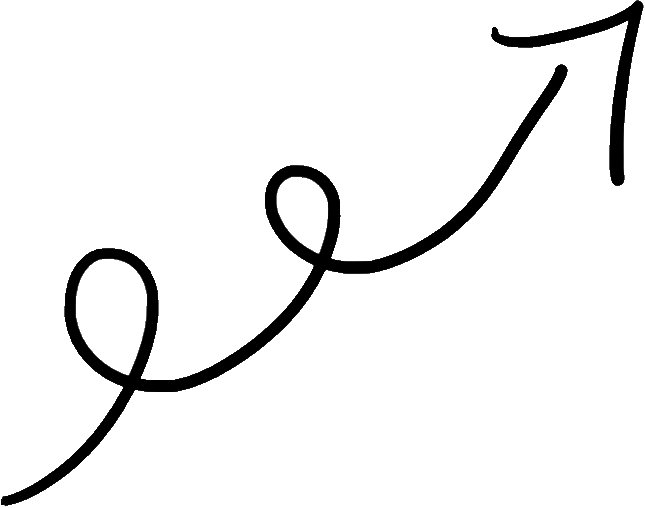
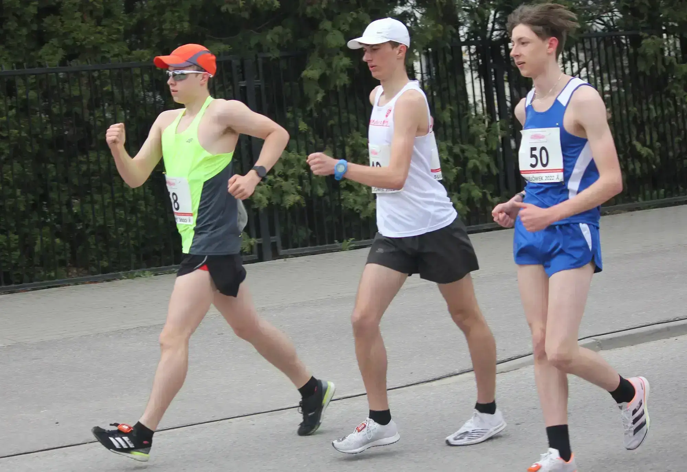

Kacper Drobik
- Programmer & race walker
Repositories:
 Rocket Game
Rocket Game Calculator
Calculator Hangman
HangmanAchievements:
Vice-championship of Poland u16- Karpacz 2021
The bronze of the Polish Championships u16- Słupsk 2020
Bronze of the U18 Polish Indoor Championships - Rzeszów 2022
2 x Master of Mazovia and Warsaw - 2021 & 2020
2nd place International competition in race walking - Gdańsk 2021
1st place National competition of LA in memory of I. Szewińska
Kontakt & współpraca:
kacper.drobik.kd@gmail.com

mój email



Copyright © 2022 Kacper Drobik